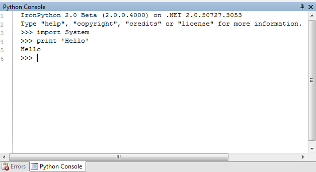

Support for IronPython 2.0 Beta 4 is now available with SharpDevelop 3.
Some of the features have been disabled compared to the IronPython integration in SharpDevelop 2.
Both of the above features involve converting code to and from a Code DOM. Support for the Code DOM is reduced in IronPython 2 so the above features have been temporarily disabled.
IronPython 2.0 beta 4 re-introduced support for compiling python code to a .NET executable or dll and so SharpDevelop supports this. There is however one limitation. The working folder needs to be set to the folder containing the compiled dll or executable otherwise it will not be able to locate any local assembly references that are not in the GAC, for example IronPython.dll.
There's now an IronPython console which can be used to type in IronPython expressions and have them evaluated interactively. It is currently missing code completion which will be implemented shortly. From the View menu select Tools and then Python Console.
